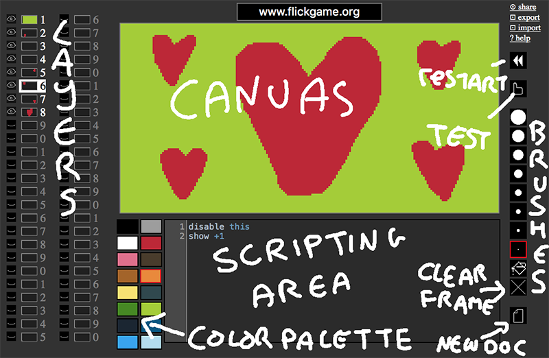

FlickScript is one of many FlickGame variants. It's more complex than the original FlickGame, offering scripting capabilities for more advanced interactions. Try this sample project →

Left click on the canvas to draw. Right click, or Ctrl/Cmd/Shift+Click to erase.
show 3 4 5
Shows layers 3, 4 and 5.
show +3
Shows the layer 3 layers ahead of the current layer. (Also enables them, if they were previously disabled).
hide -3
Hides the layer 3 layers behind the current layer.
hide 3 4 5
Hides layers 3, 4 and 5.
hide this
Hides the current layer.
disable 3 4
Disables layer 3 and 4 (if they were visible before, they will still be, but you won't be able to interact with them anymore).
enable 3 4
Enables layer 3 and 4. Doesn't set things to visible if they weren't visible already).
if 1, 2, not 3 then hide 1 2 show 4 else show 1 2 hide 3 end
If layers 1 and 2 are visible, but 3 isn't, then hide the first two layers and show the fourth, otherwise show layers 1 and 2, and hide layer 3.
At the start of each game, only layer 1 is visible. However, layer 1 is special - its script gets activated automatically when the game starts, so you can set other layers to be visible/invisible there.
Drop me a line at analytic@gmail.com, tweet to @increpare, or post a bug report on GitHub.